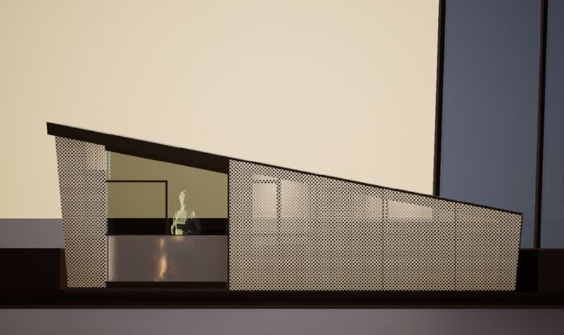

PRO · Small Scale
Sentry
- Location
- Morocco
- Year
- 2024
- Studio
- Yassir Khalil Studio
- Type
- Guard Pavilion
- Surface
- 38 m²
- Register
- 06 of 12

A guard pavilion at Casablanca Finance City, the major financial district developed on the edge of Casablanca. The building performs within an extremely constrained footprint: access control, covered waiting, and a clear visual presence that marks the entry threshold to the complex.
The pavilion is positioned at the boundary between the public road and the controlled domain, its geometry derived from this threshold condition. The structure is detailed to respond to the urban and institutional scale of Casablanca Finance City, with a compact material palette and a folded roof profile that gives the building a precise, legible silhouette.
PRO · Small Scale · Morocco · 2024
Animation
Guard pavilion at Casablanca Finance City. Animation exploring the threshold condition between public approach and controlled access.
All filmsDrawings and images

Render, Aerial View
Fig. 2
Aerial render · Guard pavilion at Casablanca Finance City · Folded roof plane in perforated steel sheeting · Perforated dark metal cladding on three sides, glazed entry face · Vehicle lane and access control threshold · Casablanca · 2024
Full size: Fig. 2, Render, Aerial View
Section B-B
Fig. 3
Section B-B · Ceiling height 2.90 m at the entry face tapering to 1.09 m at the low eave · Sloped structural roof profile in reinforced concrete · Glazed entry door and guard desk positioned at the high end · Insulated roof construction with 14 cm build-up at ridge · Foundation and floor slab at grade
Full size: Fig. 3, Section B-B